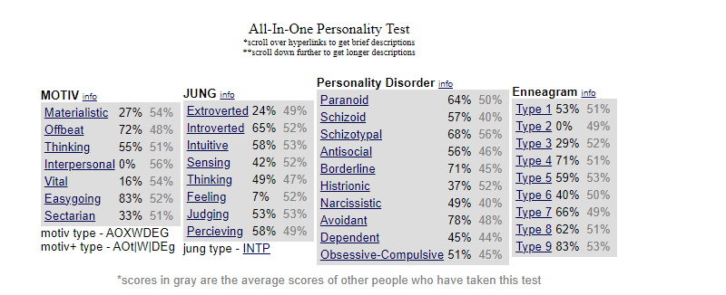

“Stop doing the things that you know are wrong that you could stop doing.” – Jordan Peterson (Celebrity)
Likes and Hobbies
Anime
Pixel Art
Gaming
Language Learning
I am Ramoune.
私はラモーンです。
Yo soy Ramoune.
Je m'appelle Ramoune.
Android Development
Personality Test:

I took the recommended personality test from https://similarminds.com/ and I can say that the test is not a very accurate representation of my personality based on the scores in recieved.